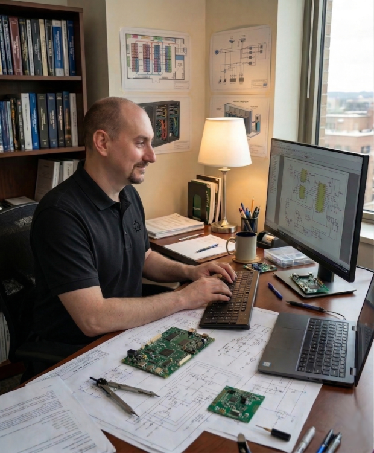

25 Years of Building, Scaling & Leading
From early sysadmin to COO of a $225M hosting company - every chapter taught me something different about technology, people, and growth. Click into any chapter to see the full story.

Northville Public Schools
Started administering school district networks in the late 1990s - building servers, pulling cable, and learning that technology is only as good as the problems it solves.
Read MoreMerit Networks / University of Michigan
Monitored and maintained backbone infrastructure for Michigan's primary research and education network - first exposure to large-scale, mission-critical network operations.
Read MoreLiquid Web
Grew with the company from 7 employees to 450, rising from Network Engineer to COO and helping build a platform that led to a $225M exit.
Power Gauge Pro
Founded Power Gauge Pro to design and manufacture embedded automotive digital dashboards - hardware, firmware, and full-stack product development from the ground up.